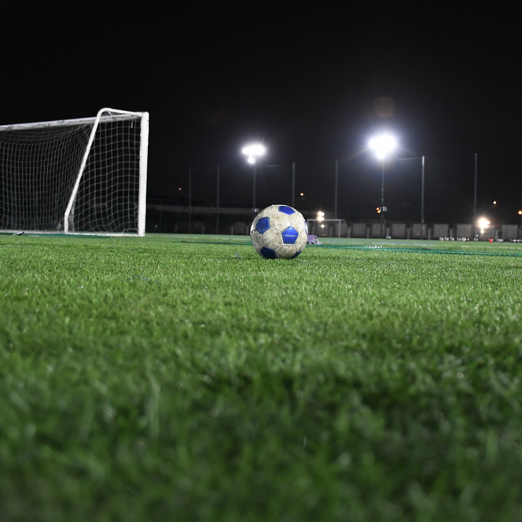

世界に羽ばたき
世界に認められる
エースへ
世界に羽ばたき
世界に認められる
エースへ
01.本田圭佑の想い
HONDA SOLTILO
「一人でも多くの『世界』で戦える
指導者・選手の育成を考え、良い環境を整え、
指導者・選手そして人間を育てていく。
将来的に、この組織での様々な経験が
素晴しい人間に成長させ、1人でも多くの人間が
この日本の地から『世界』に羽ばたき、
世界に認められる『エース』のような存在となる」
プロデュースしている本田圭佑のそんな想いが
「WAHS（＝World Ace Honda Soltilo）」
という社名に込められ、理念となっています。
02.チームの未来像
『努力』し『勝つ』というマインド。
WAHSでは世界で活躍できる、
サッカー選手・指導者だけではなく
世界の様々な分野で
輝ける人間を育成したいと考えています。
サッカー選手として技術向上だけでなく、
サッカーというツールを通じて、
世界で輝くために
必要なことを学んでもらいたいと考えています。
我々はそういった真に必要な力を得るために、
多くの選択肢を与え、
自分で判断・決断することを学ばせます。
選択肢を持ち、それをどのように
決断していくかは、
自分自身が決めることだと考えています。
その引き出しを一つでも多く持たせることが
我々の目的だと思います。
WAHSではサッカーをする上で必死になることは
重要だと考えています。
必死になることによって自分自身の弱み・強みが
わかるようになり、どう改善すればいいのかなど
自身の改善点・反省点を自身で見つけることに
よって成長につながるため重要視しています。
考え方はチームスポーツではかなり重要であり、
特にサッカーでは、数多くの人と考えを共有し、
様々な視点で物事を考えるため、
WAHSでは「考え方」をかなり重要視してます。
そして様々な考え方を取り入れるようにしています。
何事にも本気で挑むには努力は必要になります。
サッカーでは特に基礎が必要なので地道な努力、
そしてライバルと共に努力し、両者共に
成長することはなによりも重要です。
WAHSでは一人ではなくチームで伸ばしています。
WAHSではサッカーをする上で必死に
なることは
重要だと考えています。
必死になることによって
自分自身の弱み・強みが
わかるように
なり、どう改善すればいいのかなど
自身の改善点・反省点を自身で
見つけることに
よって
成長につながるため重要視しています。
考え方はチームスポーツでは
かなり重要であり、
特にサッカーでは、
数多くの人と考えを共有し、
様々な視点で物事を考えるため、
WAHSでは「考え方」を
かなり重要視してます。
そして様々な考え方を
取り入れるようにしています。
何事にも本気で挑むには努力は
必要になります。
サッカーでは特に基礎が必要なので
地道な努力、
そしてライバルと共に
努力し、両者共に
成長することは
なによりも重要です。
WAHSでは一人ではなくチームで
伸ばしています。
03.施設紹介

WAHSでは人工芝のグラウンドを
3つ管理・指定管理しており、
最高の環境、最高のパフォーマンスで
サッカーをプレイすることが可能です。
SOLTILO千葉では
選手寮があり、WAHSが管理・運営
されています。
その他にも
・トラッキングシステム「Knows」の導入（千葉から随時）
・パーソナルジムとの連携
・第一学院高等学校との提携（千葉）
・星稜高校との提携（石川）
など様々な提携や導入などを
行っております。
WAHSには監督、コーチのみならず
GKコーチやフィジカルコーチ、
リハビリトレーナー含め
30名以上が
在籍しておりトレーニングや試合に
おいて選手たちに
適切なアプローチが
できる環境を整えています。
その他にも病院と提携しているため、
ケガをした後のアフターケアが
あるため気兼ねなくサッカーを
することができます。
WAHSには監督、コーチのみならず
GKコーチやフィジカルコーチ、リハビリトレーナー含め
30名以上が在籍しておりトレーニングや試合において選手たちに
適切なアプローチができる環境を整えています。
その他にも病院と提携しているため、ケガをした後のアフターケアが
あるため気兼ねなくサッカーをすることができます。
04.OB紹介
兄がサッカーをやっていた影響を受け、
S.T.FCという街クラブで
必死にボールを追い
かけていた青年は、
夢を追いかけて、広島の瀬戸内高校に
入寮した。
地元開催のインターハイでの
活躍が認められ、
鹿島アントラーズに入団した。
鹿島での３年目には
伝統の１０番を背負い、世界のトップ
「FC Barcelona」に移籍。
日本の未来を背負い、
世界に勝負を挑んでいる。
クラブ5期生の
松本大輔選手（中央大学4年）が、
2021シーズンよりサガン鳥栖への
入団が内定しました。
SOLTILO CHIBA FCに３年間在籍
しており、現在は流通経済大学のGK
として活躍している。